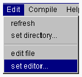
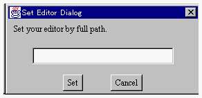
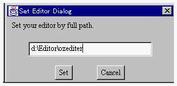

外部エディタを設定する
プロジェクトマネージャでプロジェクトファイルを編集するために、 OZ IDE 利用者自身が選択した外部エディタを利用することができます。

- <外部エディタを登録するための事前条件>
OZホーム下の secureディレクトリに存在する availableCommands ファイルに使用したい外部エディタを登録します。
【availableCommands ファイルの内容例 (NTの場合) 】
|
#安全な外部コマンドの列挙
notepad
C:\Program Files\Editor\EDITOR.EXE
oz.bat
D:\Editor\ozeditor.exe
|
- <外部エディタを設定する>
- １． プロジェクトマネージャの Edit メニューから set edit メニュー項目を選択します。

- エディタのパス名を登録するためのダイアログが開かれます。

２．使用したい外部エディタの絶対パス名をキーボード入力しSetボタンをクリックすると、プロジェクトファイルを編集するためのエディタが登録されます。(NTの場合はドライブ名：も指定してください。)

- この操作後、設定したエディタをプロジェクトファイルの編集に使用することができます。エディタの設定を行わないと、プロジェクトファイルの編集をプロジェクトマネージャで行うことはできません。
(c) 1996-1998 IPA, ETL, AT21, FSIABC, FXIS,
InArc, MRI, NUL, SBC, Sharp, TEC, TIS. All rights reserved.